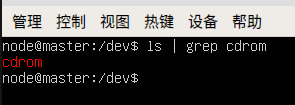
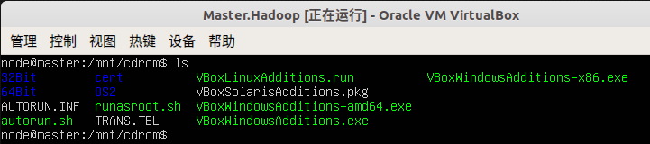
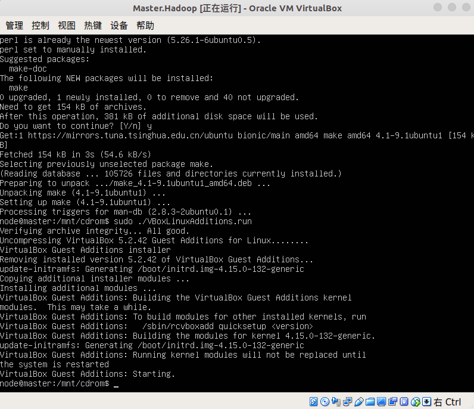
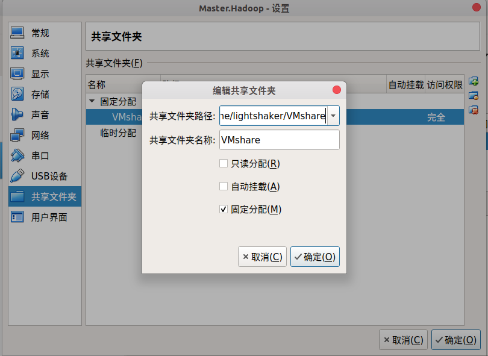

安装虚拟机增强功能
载入增强镜像文件
VBox菜单栏点击 设备 ->
安装增强功能，等待查找到匹配的镜像文件，一般名称为VBoxGuestAdditions_5.2.42.iso，查找到之后点击下载；
下载完毕镜像文件默认会保存到
~/.config/VirtualBox/路径下，如果下载完成时提示是否分配光驱，点是即可，如果忽略了这一步，可以在
设备 -> 分配光驱 ->
选择虚拟盘 中手动分配；
分配成功时，可在 分配光驱
中看到勾选的增强镜像盘，也可在VBox对应虚拟机的管理界面-存储栏目中查到，另外，虚拟机系统中的
/dev 路径下会出现子目录
cdrom，内容即为增强镜像文件的内容：

安装依赖
1 | sudo apt install gcc make perl |
安装增强功能
挂载增强镜像文件到 /mnt/cdrom
路径下，该子文件夹需要手动创建
1 | cd /mnt |

以root权限执行 VBoxLinuxAdditions.run
1 | sudo ./VBoxLinuxAdditions.run |

配置双向共享
创建主机端共享文件夹
主机中用于存放共享文件的路径，按个人意愿设定即可，我这里设定为
~/VMshare
在VBox菜单栏点击 设备 ->
共享文件夹，在固定分配一栏添加主机文件夹路径
注意这里不能点
自动挂载，否则会导致重启后无法挂载成功

创建虚拟机端共享文件夹
个人选择创建为 /mnt/share
1 | sudo mkdir -p /mnt/share |
挂载主机文件夹到虚拟机中
通过VBox中介将主机中的共享文件夹挂载到虚拟机中的共享位置，-t
指定文件类型为 vboxsf
1 | sudo mount -t vboxsf VMshare /mnt/share |
完成后在主机端往 ~/VMshare
路径中随便存一个文件，在虚拟机端的 /mnt/share
路径下就能读写该文件；
配置自动挂载
在确保手动挂载成功后，sudo vim /etc/fstab
添加内容，格式为
<共享名称> < Ubuntu共享目录> vboxsf defaults 0 0
以下是我个人的例子，编辑完保存退出即可
1 | VMshare /mnt/share vboxsf defaults 0 0 |
碰到的问题与解决方案
执行mount命令时警告read-only
具体警告：mount: /mnt/cdrom: WARNING: device write-protected, mounted read-only
解决方案：由于只需要读取并运行.run文件，因此写操作被保护也无所谓，无视即可；
移除挂载的方式
sudo umount -f /mnt/share